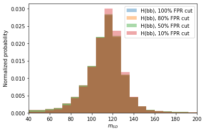
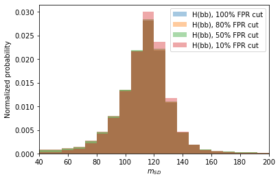
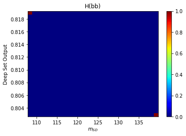
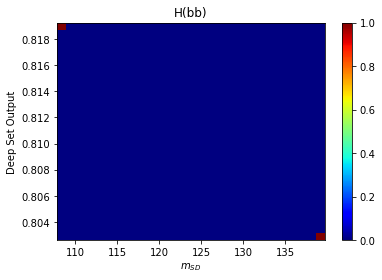

Week 6 Notebook: Evalulating Model Performance and Robustness¶
Let’s take a look at the model performance and dependence on other variables.
import keras
import numpy as np
from sklearn.metrics import roc_curve, auc
import matplotlib.pyplot as plt
import uproot
Using TensorFlow backend.
/usr/share/miniconda/envs/analysis/lib/python3.7/site-packages/tensorflow/python/framework/dtypes.py:516: FutureWarning: Passing (type, 1) or '1type' as a synonym of type is deprecated; in a future version of numpy, it will be understood as (type, (1,)) / '(1,)type'.
_np_qint8 = np.dtype([("qint8", np.int8, 1)])
/usr/share/miniconda/envs/analysis/lib/python3.7/site-packages/tensorflow/python/framework/dtypes.py:517: FutureWarning: Passing (type, 1) or '1type' as a synonym of type is deprecated; in a future version of numpy, it will be understood as (type, (1,)) / '(1,)type'.
_np_quint8 = np.dtype([("quint8", np.uint8, 1)])
/usr/share/miniconda/envs/analysis/lib/python3.7/site-packages/tensorflow/python/framework/dtypes.py:518: FutureWarning: Passing (type, 1) or '1type' as a synonym of type is deprecated; in a future version of numpy, it will be understood as (type, (1,)) / '(1,)type'.
_np_qint16 = np.dtype([("qint16", np.int16, 1)])
/usr/share/miniconda/envs/analysis/lib/python3.7/site-packages/tensorflow/python/framework/dtypes.py:519: FutureWarning: Passing (type, 1) or '1type' as a synonym of type is deprecated; in a future version of numpy, it will be understood as (type, (1,)) / '(1,)type'.
_np_quint16 = np.dtype([("quint16", np.uint16, 1)])
/usr/share/miniconda/envs/analysis/lib/python3.7/site-packages/tensorflow/python/framework/dtypes.py:520: FutureWarning: Passing (type, 1) or '1type' as a synonym of type is deprecated; in a future version of numpy, it will be understood as (type, (1,)) / '(1,)type'.
_np_qint32 = np.dtype([("qint32", np.int32, 1)])
/usr/share/miniconda/envs/analysis/lib/python3.7/site-packages/tensorflow/python/framework/dtypes.py:525: FutureWarning: Passing (type, 1) or '1type' as a synonym of type is deprecated; in a future version of numpy, it will be understood as (type, (1,)) / '(1,)type'.
np_resource = np.dtype([("resource", np.ubyte, 1)])
/usr/share/miniconda/envs/analysis/lib/python3.7/site-packages/tensorboard/compat/tensorflow_stub/dtypes.py:541: FutureWarning: Passing (type, 1) or '1type' as a synonym of type is deprecated; in a future version of numpy, it will be understood as (type, (1,)) / '(1,)type'.
_np_qint8 = np.dtype([("qint8", np.int8, 1)])
/usr/share/miniconda/envs/analysis/lib/python3.7/site-packages/tensorboard/compat/tensorflow_stub/dtypes.py:542: FutureWarning: Passing (type, 1) or '1type' as a synonym of type is deprecated; in a future version of numpy, it will be understood as (type, (1,)) / '(1,)type'.
_np_quint8 = np.dtype([("quint8", np.uint8, 1)])
/usr/share/miniconda/envs/analysis/lib/python3.7/site-packages/tensorboard/compat/tensorflow_stub/dtypes.py:543: FutureWarning: Passing (type, 1) or '1type' as a synonym of type is deprecated; in a future version of numpy, it will be understood as (type, (1,)) / '(1,)type'.
_np_qint16 = np.dtype([("qint16", np.int16, 1)])
/usr/share/miniconda/envs/analysis/lib/python3.7/site-packages/tensorboard/compat/tensorflow_stub/dtypes.py:544: FutureWarning: Passing (type, 1) or '1type' as a synonym of type is deprecated; in a future version of numpy, it will be understood as (type, (1,)) / '(1,)type'.
_np_quint16 = np.dtype([("quint16", np.uint16, 1)])
/usr/share/miniconda/envs/analysis/lib/python3.7/site-packages/tensorboard/compat/tensorflow_stub/dtypes.py:545: FutureWarning: Passing (type, 1) or '1type' as a synonym of type is deprecated; in a future version of numpy, it will be understood as (type, (1,)) / '(1,)type'.
_np_qint32 = np.dtype([("qint32", np.int32, 1)])
/usr/share/miniconda/envs/analysis/lib/python3.7/site-packages/tensorboard/compat/tensorflow_stub/dtypes.py:550: FutureWarning: Passing (type, 1) or '1type' as a synonym of type is deprecated; in a future version of numpy, it will be understood as (type, (1,)) / '(1,)type'.
np_resource = np.dtype([("resource", np.ubyte, 1)])
# 48 track-level features
features = ['track_pt',
'track_ptrel',
'trackBTag_Eta',
'trackBTag_DeltaR',
'trackBTag_EtaRel',
'trackBTag_JetDistVal',
'trackBTag_Momentum',
'trackBTag_PPar',
'trackBTag_PParRatio',
'trackBTag_PtRatio',
'trackBTag_PtRel',
'trackBTag_Sip2dSig',
'trackBTag_Sip2dVal',
'trackBTag_Sip3dSig',
'trackBTag_Sip3dVal',
'track_VTX_ass',
'track_charge',
'track_deltaR',
'track_detadeta',
'track_dlambdadz',
'track_dlambdadz',
'track_dphidphi',
'track_dphidxy',
'track_dptdpt',
'track_drminsv',
'track_drsubjet1',
'track_drsubjet2',
'track_dxy',
'track_dxydxy',
'track_dxydz',
'track_dxysig',
'track_dz',
'track_dzdz',
'track_dzsig',
'track_erel',
'track_etarel',
'track_fromPV',
'track_isChargedHad',
'track_isEl',
'track_isMu',
'track_lostInnerHits',
'track_mass',
'track_normchi2',
'track_phirel',
'track_pt',
'track_ptrel',
'track_puppiw',
'track_quality']
# spectators to define mass/pT window
spectators = ['fj_sdmass',
'fj_pt']
# 2 labels: QCD or Hbb (we'll reduce the following labels)
labels = ['label_QCD_b',
'label_QCD_bb',
'label_QCD_c',
'label_QCD_cc',
'label_QCD_others',
'sample_isQCD',
'label_H_bb']
nfeatures = len(features)
nspectators = len(spectators)
nlabels = 2
# we're going to zero-pad up to 60 tracks
ntracks = 60
class DataGenerator(keras.utils.Sequence):
'Generates data for Keras'
def __init__(self, list_files, features, labels, spectators, batch_size=1024, n_dim=60,
remove_mass_pt_window=False, remove_unlabeled=True, return_spectators=False,
max_entry = 20000):
'Initialization'
self.batch_size = batch_size
self.labels = labels
self.list_files = list_files
self.features = features
self.spectators = spectators
self.return_spectators = return_spectators
self.n_dim = n_dim
self.n_channels = len(features)
self.remove_mass_pt_window = remove_mass_pt_window
self.remove_unlabeled = remove_unlabeled
self.global_IDs = []
self.local_IDs = []
self.file_mapping = []
self.max_entry = max_entry
self.open_files = [None]*len(self.list_files)
running_total = 0
for i, file_name in enumerate(self.list_files):
root_file = uproot.open(file_name)
self.open_files.append(root_file)
tree = root_file['deepntuplizer/tree']
tree_length = min(len(tree),max_entry)
self.global_IDs.append(np.arange(running_total,running_total+tree_length))
self.local_IDs.append(np.arange(tree_length))
self.file_mapping.append(np.repeat(i,tree_length))
running_total += tree_length
root_file.close()
self.global_IDs = np.concatenate(self.global_IDs)
self.local_IDs = np.concatenate(self.local_IDs)
self.file_mapping = np.concatenate(self.file_mapping)
self.on_epoch_end()
def __len__(self):
'Denotes the number of batches per epoch'
return int(np.floor(len(self.global_IDs) / self.batch_size))
def __getitem__(self, index):
'Generate one batch of data'
# Generate indexes of the batch
indexes = self.indexes[index*self.batch_size:(index+1)*self.batch_size]
files = self.file_mapping[index*self.batch_size:(index+1)*self.batch_size]
unique_files = np.unique(files)
starts = np.array([min(indexes[files==i]) for i in unique_files])
stops = np.array([max(indexes[files==i]) for i in unique_files])
# Check if files needed open (if not open them)
# Also if file is not needed, close it
for ifile, file_name in enumerate(self.list_files):
if ifile in unique_files:
if self.open_files[ifile] is None:
self.open_files[ifile] = uproot.open(file_name)
else:
if self.open_files[ifile] is not None:
self.open_files[ifile].close()
self.open_files[ifile] = None
# Generate data
return self.__data_generation(unique_files, starts, stops)
def on_epoch_end(self):
'Updates indexes after each epoch'
self.indexes = self.local_IDs
def __data_generation(self, unique_files, starts, stops):
'Generates data containing batch_size samples'
# X : (n_samples, n_dim, n_channels)
# y : (n_samples, 2)
Xs = []
ys = []
zs = []
# Generate data
for ifile, start, stop in zip(unique_files, starts, stops):
if self.return_spectators:
X, y, z = self.__get_features_labels(ifile, start, stop)
zs.append(z)
else:
X, y = self.__get_features_labels(ifile, start, stop)
Xs.append(X)
ys.append(y)
# Stack data if going over multiple files
if len(unique_files)>1:
X = np.concatenate(Xs,axis=0)
y = np.concatenate(ys,axis=0)
if self.return_spectators:
z = np.concatenate(zs,axis=0)
if self.return_spectators:
return X, y, z
return X, y
def __get_features_labels(self, ifile, entrystart, entrystop):
'Loads data from one file'
# Double check that file is open
if self.open_files[ifile] is None:
root_file = uproot.open(self.list_file[ifile])
else:
root_file = self.open_files[ifile]
tree = root_file['deepntuplizer/tree']
feature_array = tree.arrays(branches=self.features,
entrystart=entrystart,
entrystop=entrystop,
namedecode='utf-8')
label_array_all = tree.arrays(branches=self.labels,
entrystart=entrystart,
entrystop=entrystop,
namedecode='utf-8')
X = np.stack([feature_array[feat].pad(self.n_dim, clip=True).fillna(0).regular() for feat in features],axis=2)
n_samples = X.shape[0]
y = np.zeros((n_samples,2))
y[:,0] = label_array_all['sample_isQCD'] * (label_array_all['label_QCD_b'] + \
label_array_all['label_QCD_bb'] + \
label_array_all['label_QCD_c'] + \
label_array_all['label_QCD_cc'] + \
label_array_all['label_QCD_others'])
y[:,1] = label_array_all['label_H_bb']
if self.remove_mass_pt_window:
# remove data outside of mass/pT range
spec_array = tree.arrays(branches=self.spectators,
entrystart=entrystart,
entrystop=entrystop,
namedecode='utf-8')
z = np.stack([spec_array[spec] for spec in self.spectators],axis=1)
X = X[(z[:,0] > 40) & (z[:,0] < 200) & (z[:,1] > 300) & (z[:,1] < 2000)]
y = y[(z[:,0] > 40) & (z[:,0] < 200) & (z[:,1] > 300) & (z[:,1] < 2000)]
z = z[(z[:,0] > 40) & (z[:,0] < 200) & (z[:,1] > 300) & (z[:,1] < 2000)]
if self.remove_unlabeled:
# remove unlabeled data
X = X[np.sum(y,axis=1)==1]
if self.return_spectators:
z = z[np.sum(y,axis=1)==1]
y = y[np.sum(y,axis=1)==1]
if self.return_spectators:
return X, y, z
return X, y
Load the Previous Model¶
Here, we will load the last model trained in Notebook 5.
# define callbacks
from keras.models import load_model
keras_model_conv1d = load_model('keras_model_conv1d_best.h5')
WARNING:tensorflow:From /usr/share/miniconda/envs/analysis/lib/python3.7/site-packages/keras/backend/tensorflow_backend.py:422: The name tf.global_variables is deprecated. Please use tf.compat.v1.global_variables instead.
Configure Data Generator for Testing¶
We will configure the data generator to load testing data, including “spectator variables” that we were not used in the training, but may be correlated with the output of the algorithm. Specifically, the jet mass and pT.
# load testing file
test_files = ['root://eospublic.cern.ch//eos/opendata/cms/datascience/HiggsToBBNtupleProducerTool/HiggsToBBNTuple_HiggsToBB_QCD_RunII_13TeV_MC/test/ntuple_merged_0.root'
]
test_generator = DataGenerator(test_files, features, labels, spectators, batch_size=8192, n_dim=ntracks,
remove_mass_pt_window=True,
remove_unlabeled=True,
return_spectators=True,
max_entry = 200000) # basically, no maximum
import tqdm
# run model inference on test data set
predict_array_cnn = []
label_array_test = []
spec_array_test = []
for t in tqdm.tqdm(test_generator,total=len(test_generator)):
label_array_test.append(t[1])
spec_array_test.append(t[2])
predict_array_cnn.append(keras_model_conv1d.predict(t[0]))
predict_array_cnn = np.concatenate(predict_array_cnn,axis=0)
label_array_test = np.concatenate(label_array_test,axis=0)
spec_array_test = np.concatenate(spec_array_test,axis=0)
# create ROC curves
fpr_cnn, tpr_cnn, threshold_cnn = roc_curve(label_array_test[:,1], predict_array_cnn[:,1])
# plot ROC curves
plt.figure()
plt.plot(tpr_cnn, fpr_cnn, lw=2.5, label="Conv1D, AUC = {:.1f}%".format(auc(fpr_cnn,tpr_cnn)*100))
plt.xlabel(r'True positive rate')
plt.ylabel(r'False positive rate')
plt.semilogy()
plt.ylim(0.001,1)
plt.xlim(0,1)
plt.grid(True)
plt.legend(loc='upper left')
plt.show()
0%| | 0/24 [00:00<?, ?it/s]
4%|▍ | 1/24 [00:06<02:27, 6.42s/it]
8%|▊ | 2/24 [00:12<02:16, 6.19s/it]
12%|█▎ | 3/24 [00:18<02:10, 6.21s/it]
17%|█▋ | 4/24 [00:22<01:49, 5.47s/it]
21%|██ | 5/24 [00:27<01:45, 5.53s/it]
25%|██▌ | 6/24 [00:33<01:39, 5.53s/it]
29%|██▉ | 7/24 [00:36<01:24, 4.96s/it]
33%|███▎ | 8/24 [00:42<01:22, 5.18s/it]
38%|███▊ | 9/24 [00:49<01:27, 5.80s/it]
42%|████▏ | 10/24 [00:53<01:11, 5.12s/it]
46%|████▌ | 11/24 [00:59<01:08, 5.28s/it]
50%|█████ | 12/24 [01:04<01:05, 5.46s/it]
54%|█████▍ | 13/24 [01:08<00:54, 4.94s/it]
58%|█████▊ | 14/24 [01:14<00:51, 5.19s/it]
62%|██████▎ | 15/24 [01:19<00:47, 5.28s/it]
67%|██████▋ | 16/24 [01:23<00:37, 4.72s/it]
71%|███████ | 17/24 [01:28<00:34, 4.95s/it]
75%|███████▌ | 18/24 [01:34<00:30, 5.16s/it]
79%|███████▉ | 19/24 [01:37<00:23, 4.67s/it]
83%|████████▎ | 20/24 [01:45<00:22, 5.63s/it]
88%|████████▊ | 21/24 [01:51<00:16, 5.51s/it]
92%|█████████▏| 22/24 [01:54<00:09, 4.89s/it]
96%|█████████▌| 23/24 [02:00<00:05, 5.10s/it]
100%|██████████| 24/24 [02:05<00:00, 5.19s/it]
100%|██████████| 24/24 [02:05<00:00, 5.23s/it]

def find_nearest(array,value):
idx = (np.abs(array-value)).argmin()
return idx, array[idx]
Correlation with jet mass¶
This algorithm has a slight dependence on jet mass. Qualitatively, we can observe this “mass sculpting” by making the distributino of the jet mass with tighter and tighter requirements on the algorithm output. We can see that the original distribution of the jet mass for the background has no “resonance” or bump, and is basically smoothly falling.
However, once a requirement is made on the algorithm output, jets with low mass or high mass are excluded at higher rates.
plt.figure()
for wp in [1.0, 0.8, 0.5, 0.1]:
idx, val = find_nearest(fpr_cnn, wp)
plt.hist(spec_array_test[:,0], bins = np.linspace(40, 200, 21),
weights = label_array_test[:,0]*(predict_array_cnn[:,1] > threshold_cnn[idx]),
alpha=0.4,density=True, label='QCD, {}% FPR cut'.format(int(wp*100)),linestyle='-')
plt.legend()
plt.xlabel(r'$m_{SD}$')
plt.ylabel(r'Normalized probability')
plt.xlim(40,200)
plt.figure()
for wp in [1.0, 0.8, 0.5, 0.1]:
idx, val = find_nearest(fpr_cnn, wp)
plt.hist(spec_array_test[:,0], bins = np.linspace(40, 200, 21),
weights = label_array_test[:,1]*(predict_array_cnn[:,1] > threshold_cnn[idx]),
alpha=0.4,density=True, label='H(bb), {}% FPR cut'.format(int(wp*100)),linestyle='-')
plt.legend()
plt.xlabel(r'$m_{SD}$')
plt.ylabel(r'Normalized probability')
plt.xlim(40,200)
plt.figure()
plt.hist2d(spec_array_test[:,0][(label_array_test[:,0]==1) & (predict_array_cnn[:,1] > 0.1)],
predict_array_cnn[:,1][(label_array_test[:,0]==1) & (predict_array_cnn[:,1] > 0.1)],
bins=(30, 30),
cmap=plt.cm.jet)
plt.colorbar()
plt.title('QCD')
plt.ylabel(r'Conv1D Output')
plt.xlabel(r'$m_{SD}$')
plt.figure()
plt.hist2d(spec_array_test[:,0][(label_array_test[:,1]==1) & (predict_array_cnn[:,1] > 0.8)],
predict_array_cnn[:,1][(label_array_test[:,1]==1) & (predict_array_cnn[:,1] > 0.8)],
bins=(30, 30),
cmap=plt.cm.jet)
plt.colorbar()
plt.title('H(bb)')
plt.ylabel(r'Conv1D Output')
plt.xlabel(r'$m_{SD}$')
plt.show()
 

 

Dependence on jet pT¶
We can repeat the exercise this time looking at jet pT. We see that in general, higher pT jets are promoted to be more “signal-like” by the algorithm. This is likely due to the fact that high pT jets are over-represented in the signal sample compared to the background sample.
plt.figure()
for wp in [1.0, 0.8, 0.5, 0.1]:
idx, val = find_nearest(fpr_cnn, wp)
plt.hist(spec_array_test[:,1], bins = np.linspace(300, 2000, 51),
weights = label_array_test[:,0]*(predict_array_cnn[:,1] > threshold_cnn[idx]),
alpha=0.4,density=True, label='QCD, {}% FPR cut'.format(int(wp*100)),linestyle='-')
plt.legend()
plt.xlabel(r'$p_{T}$')
plt.ylabel(r'Normalized probability')
plt.xlim(300,2000)
plt.figure()
for wp in [1.0, 0.8, 0.5, 0.1]:
idx, val = find_nearest(fpr_cnn, wp)
plt.hist(spec_array_test[:,1], bins = np.linspace(300, 2000, 51),
weights = label_array_test[:,1]*(predict_array_cnn[:,1] > threshold_cnn[idx]),
alpha=0.4,density=True, label='H(bb), {}% FPR cut'.format(int(wp*100)),linestyle='-')
plt.legend()
plt.xlabel(r'$p_{T}$')
plt.ylabel(r'Normalized probability')
plt.xlim(300,2000)
plt.show()